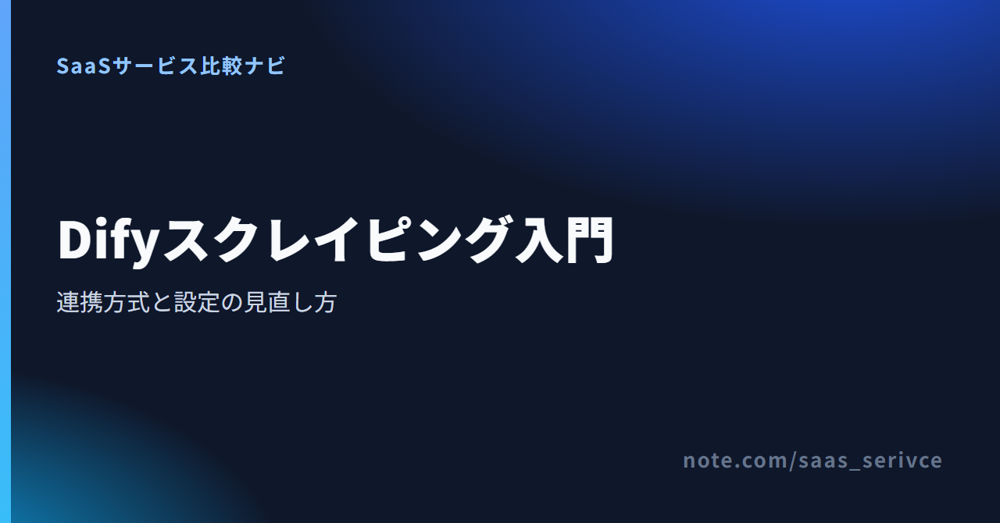
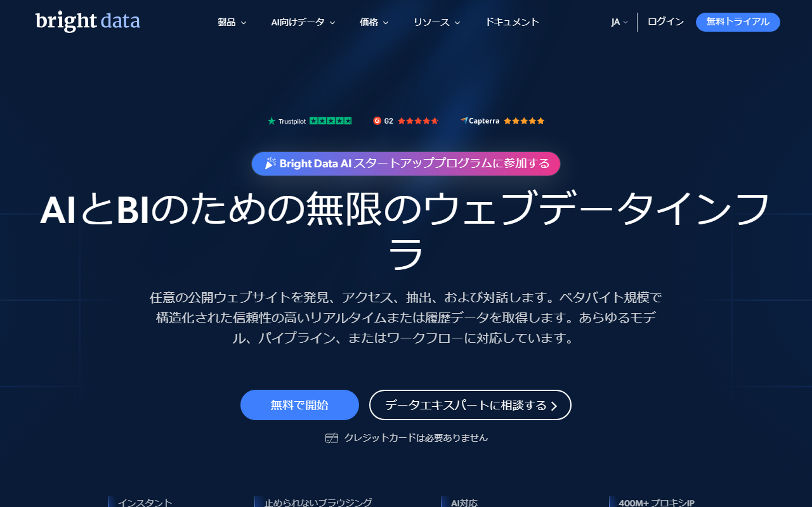

Difyは、WebデータをAIワークフローやナレッジへ取り込める開発基盤です。ただし、ページの取得には外部サービスやプラグインを使います。
主な選択肢は3方式です。DifyでWebスクレイピングを始めるときの選び方から、設定、出力整形、エラー対処まで順に紹介します。
定期的にサイト全体を取り込むならナレッジ同期、単一ページならプラグインが候補です。外部サービスのAPIキーやリクエスト本文まで設定したい場合は、HTTP/API連携を選びます。
登録ページでは、DifyからAPI連携するサービスと無料クレジットの対象範囲を確認できます。プロキシ製品は月次無料クレジットの対象外です。
ナレッジ同期は、複数ページをまとめてRAGの参照元にしたい場合に向きます。開始URLと取得範囲を決め、本文をMarkdownとしてナレッジへ渡す流れです。
製品マニュアルやヘルプセンターなど、同じサイトを定期的に更新したい場面と相性がよい方式です。一方、対象範囲を広げすぎると不要なページまで入り、更新にも時間がかかります。まず対象パスと更新頻度を決めておきます。
特定ページの要約や項目抽出なら、取得プラグインをワークフローへ置く方法が簡潔です。User InputノードでURLを受け取り、取得結果をLLMへ渡します。
設定箇所が少なく、入力と出力の関係を追いやすいのが利点です。複数URLへ広げる前に、取得ノードの本文出力がLLMへ正しく渡るかを確かめます。
HTTP/API連携では、外部のスクレイピングAPIへリクエストを送り、結果をDifyで受け取ります。ここで扱う認証は、外部APIへ接続するためのAPIキー認証です。対象サイトへログインするためのCookieやセッション認証とは分けて考えます。
HTTP Requestでは、URL、ヘッダー、本文、応答形式を分けて指定できます。ログイン後のページを扱う場合は、閲覧権限に加えて規約上の許可も必要です。
Firecrawlは、開始URLや下層ページの範囲を指定し、取得した本文をMarkdownとしてDifyのナレッジへ渡せます。最初からサイト全体を対象にせず、少ないページ数で結果を見ます。
Dify Marketplaceには、Firecrawlのデータソースと取得ツールがあります。サイトをナレッジへ同期する場合は、データソース側を追加します。ワークフローで1ページを取る場合は、Scrapeなどのアクションを使います。
Firecrawlで発行したAPIキーは、Difyの資格情報欄へ保存します。プロンプトや通常の入力変数へ書くと、実行ログや共有画面に残るおそれがあります。
Firecrawlの公式サイトでは、毎月のクレジット数と各プランの同時リクエスト数を確認できます。
開始URLは、取得したい情報に近い階層を選びます。サイトのトップを指定すると、会社情報や採用ページなど、RAGに不要な内容まで混ざる場合があるためです。
深さとページ上限は小さく設定します。取得結果を見て、必要なパスを残し、タグ一覧や検索結果などの重複ページを除外します。ページを増やすのは、その後で十分です。
同期が終わったら、件数だけで成功と判断しません。見出しと本文が残っているか、ナビゲーションやフッターが大半を占めていないかを読みます。
同じページがURL違いで重複していないかも要確認です。回答テストでは、元の記述とDifyの回答を見比べます。回答の参照元として役立たないページは、取得対象から外します。
単一ページの要約や抽出なら、User Inputの後に取得プラグインを置き、LLMを経てOutputにつなぎます。取得ノードが返した本文を、変数として後続ノードへ渡す構成です。
User Inputノードに対象URLを入れる文字列変数を追加し、必須項目に設定します。入力変数にすると、固定URLを取得ノードへ直接書く場合よりも、テスト対象を替えやすくなります。
URL以外の条件も必要なら、取得したい言語や商品カテゴリを別変数に分けます。各入力欄で付けた変数名は、後続ノードの変数選択画面に表示されます。
取得ノードが返す本文を、LLMノードのプロンプトへ割り当てます。プロンプト欄で変数一覧を開き、「取得ノード名／本文の出力変数」を選びます。URL変数だけを渡しても、LLMがページを読めるわけではありません。
プロンプトには、要約や抽出の目的だけを書きます。APIキーや認証情報は含めません。Outputノードでは「LLM／text」と元URLを出力変数に選ぶと、回答から取得元をたどれます。
URLの配列はIterationへ渡します。各要素に同じ取得ノードとLLMノードを適用し、結果を配列としてまとめる構成です。
Iterationは順次実行と並列実行を選べます。外部APIの同時実行上限や429エラーを避けたい場合は順次実行、互いに独立したURLを短時間で処理したい場合は並列実行が候補です。一部のURLが失敗しても追跡できるよう、元URLと結果を同じ単位で残します。
Difyの日本語サイトでは、Cloud版とセルフホスト版の違い、プランごとの上限を確認できます。
アクセス許可と規約の条件を満たしていても、JavaScript描画や構造化取得で基本プラグインが止まる場合があります。その場合は、Bright DataのDifyプラグインまたはAPI連携が候補です。外部APIの認証情報と取得方式を分けて設定します。

対応する取得処理がDifyプラグインに用意されているなら、プラグインから始めると設定を減らせます。商品情報の構造化取得、Markdownでのページ取得、検索結果の取得は、目的が異なります。
HTTP Requestは、外部APIのリクエスト内容を自分で組みたい場合に選びます。ヘッダー、本文、応答形式を分けて設定できるため、既存のAPI仕様へ合わせたい場面に向いています。
HTTP Requestを使う場合は、APIキーをSecret型の環境変数へ保存します。その変数をAPI Key認証のBearerまたはCustomへ渡せば、実行ログでは秘密値が伏せられます。対象URL、取得方式、必要な出力項目は別々に設定します。
応答はBody、Status Code、Headersに分かれて後続ノードから参照できます。JSONが必要でも、まずBodyに取得結果が入ったことを確かめてから出力項目を増やします。
無料で公開され、静的な本文を返すページは、基本プラグインで足りることがあります。403が出たら、先に対象サイトの規約とアクセス条件を見直します。取得方法を変えても、アクセス許可が増えるわけではありません。
商品名、価格、URLなどを決まった項目で受け取りたい場合も、構造化取得が候補になります。取得が難しい対象だけを高機能なAPIに振り分けると、費用を追いやすくなります。
登録ページから、Dify連携に使う認証情報と対象サービスを準備できます。月次無料クレジットはWeb Scraper APIなどが対象で、プロキシ製品には適用されません。
要約やRAGにはMarkdown、商品名や価格などの固定項目にはJSONが向きます。Difyでは取得ノードの出力変数を選び、LLM、Code、Templateのどこで整形するかを決めます。
Markdownは見出しと段落の関係を保ちやすく、長い本文をLLMへ渡す場面に合います。取得ノードの本文出力をLLMのプロンプト欄で選び、要約や抽出の指示と分けて配置します。広告やメニューを除くなら、LLMへ渡す前にCodeノードで処理します。
まずは、次のような小さな出力形式で試します。
商品や求人のように同じ項目を繰り返し扱うなら、LLMノードのStructured Outputで項目名と型を定義します。後続ノードでは「LLMノード名／structured_output」を選ぶと、自由文ではなく決めた項目を参照できます。
項目名は途中で変えず、必須項目もスキーマ上で指定します。配列や入れ子が必要ならJSON Schemaを使い、単純な項目ならVisual Editorで型を設定します。
Test Run後は対象ノードを選び、LAST RUNの入力と出力を開きます。HTTP RequestならBody、LLMならtextまたはstructured_outputを見て、空値が次へ渡っていないか確かめます。
データが不正な場合は、そのままOutputへ送らず、IF/ELSEで空値を分岐させます。取得ノードのBodyが空なら再取得、Bodyはあるのにstructured_outputが崩れたならLLMかCodeだけを見直します。
Test Runを実行し、失敗したノードのLAST RUNを開きます。入力と出力は、User InputのURLからLLMの出力まで順にたどります。
401は、HTTP Requestノードの認証方式とSecret環境変数を見直します。BearerかCustomかは外部APIの仕様に合わせ、更新後は「Run this step」で取得ノードだけを再実行します。
403では対象サイトの規約、閲覧権限、取得方式を切り分けます。429ならIterationを順次実行へ切り替えるか、並列処理を抑えます。ここでLLMのプロンプトを直しても、取得側の問題は解決しません。
Status Codeが成功を示していても、Bodyが空なら、JavaScript描画後の内容が必要かもしれません。除外条件が広すぎて、本文まで消している場合もあります。
タイムアウト時は、HTTP Requestの接続・読み取り・書き込みについて、それぞれのタイムアウト設定を見直します。Crawlなら下層の深さとページ上限も減らします。
JSONの構文エラーが出たら、HTTP RequestのBodyとLLMのstructured_outputを別々に開きます。まずBodyをOutputへ一時的に渡し、必要な内容が含まれるかを読みます。
Bodyに内容があれば、LLMまたはCodeノードだけを「Run this step」で再実行します。値に改行や引用符があっても、文字列を手作業で連結せず、Structured OutputかCodeノードの出力変数へ渡します。
基本取得で403や空結果が続く場合は、管理型の取得サービスと対象製品を登録ページで確認できます。無料クレジットの対象は製品ごとに異なります。
Difyの契約だけでは総額は決まりません。ワークフローの実行回数、LLMの入出力トークン、外部サービスの取得ページ数を分けて見積もります。
Dify CloudのSandboxは$0で、1ワークスペース、1人、5アプリを利用できます。APIレート上限は月5,000回です。オープンソースのCommunity版は、セルフホストなら無料で使えます。
有料のProfessionalは月払い$59、年払い$590です。1ドル=158円換算（執筆時点の目安。為替で変動）では、月払いは約9,300円になります。Dify Cloudはカード払いで、銀行振込には対応していません。日本発行カードとJCBの可否、日本語での有人サポートは確認できていません。
LLMの料金は、接続先のモデル側で発生する場合があります。長いWeb本文を毎回そのまま渡すと、入力トークンが増えます。
取得後に不要なメニューや重複箇所を削り、必要な本文だけを渡します。テスト中は短いページを選び、モデルも固定すると、処理ごとの差を追えます。
FirecrawlのFreeは$0で、毎月1,000クレジットです。基本のScrape、Crawl、Mapは1ページ1クレジット。Hobbyは月払い$19、または年払いで月$16です。セルフサービス契約はカード払いで、請求書払いはScaleとEnterpriseが対象。日本語UIと日本語サポートは確認できていません。
Bright Dataは、対象製品共通の月5,000無料クレジットを新規アカウントへ付与します。Web Unlocker API、SERP API、Web Scraper APIなどが対象です。Datacenter、ISP、Residential Proxiesは、この月次無料枠に含まれません。
Web Scraper APIなどの有料単価と最低利用条件は、対象製品の料金ページで照合します。支払いは、クレジットカード、PayPal、Alipayに対応しています。Payoneer、Google Pay、Apple Payも使えます。ただし、日本発行カードとJCBの可否は確認できていません。請求書・領収書のダウンロード手順も公開情報では不明です。日本語サイトはありますが、管理画面全体と有人サポートが日本語で対応できる範囲は未確認です。
Firecrawlの料金ページでは、プラン別のクレジット数と繰り越し条件を確認できます。
技術的に取得できても、自由に保存・再利用できるとは限りません。対象サイトの規約、robots.txt、著作権、個人情報、アクセス頻度を実装前に確認します。
最初に、対象サイトの利用規約とrobots.txtを読みます。自動取得を禁止している範囲や、再利用に条件が付くコンテンツは対象から外します。
robots.txtだけで法的な可否が決まるわけではありません。著作権や契約条件も含めて判断し、取得した本文をそのまま公開しないようにします。
氏名、連絡先、購入履歴などの個人データは、安易に集めません。ログイン後のページも、閲覧権限があることと自動取得してよいことは別です。
必要性が明確でない情報は取得対象から外します。業務で扱う場合は、保存先、閲覧できる人、削除時期まで決めます。
並列数を抑え、短時間に大量のリクエストを送らないようにします。対象サイトへの負荷だけでなく、403や429の原因にもなります。
定期実行では、更新頻度に合った間隔を選びます。毎日変わらない資料を短い間隔で取り直しても、費用と負荷が増えるだけです。
サイト全体の定期更新はナレッジ同期、単一ページはプラグイン、外部APIの認証や構造化取得はHTTP/API連携から検討します。方式を選んだら、取得結果と後続ノードの変数を順に確かめます。
最小構成は、URL入力、取得、整形、出力の4段階です。まず取得したMarkdownを読み、次にJSONなど必要な形へ整えます。
エラーが出た場合も、URLから順に1段階ずつ見ます。この順序を守れば、外部サービスの問題とDify内の変数設定を混同せずに済みます。
基本プラグインで取得できるページは、そのまま使えます。JavaScript描画やアクセス制限で止まる対象だけ、管理型のAPIへ切り替えます。
外部APIを選ぶときは、対応ページの多さより先に、課金単位と出力形式を見ます。無料枠で1ページを試し、必要な項目が返ることを確かめてから対象を増やします。
Bright Dataの登録ページは、DifyからAPI連携を始める入口です。月次無料クレジットの対象には制限があり、プロキシ製品は含まれません。
関連するnote
もっと詳しく比較したい方へ